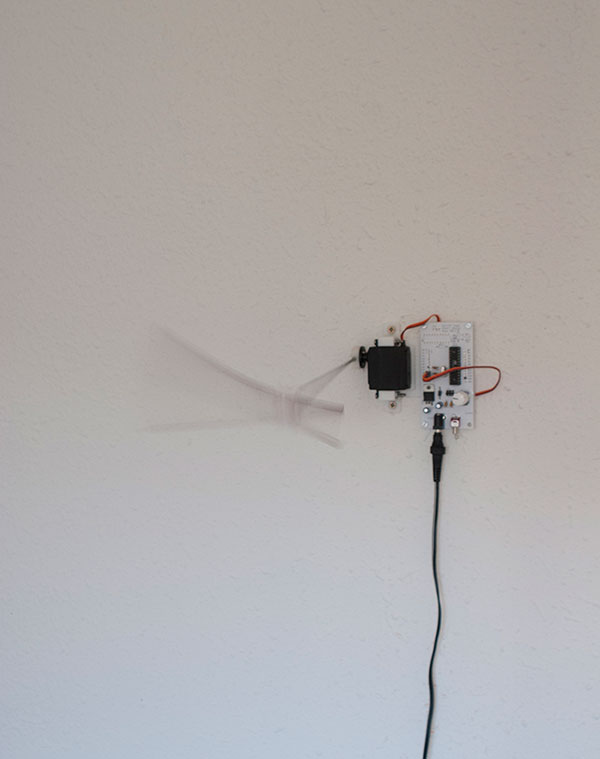

 |
|||
|
Goma 2012-14 Dimensions variable. Electronic board, servomotor, 3d printing objects & pen. A simple mechanism emulates the classical optical effect of a moving pencil which appears as if rubber. Design & 3d print objects - Los hacedores
Goma 2012-14 medidas variables. Placa electrónica, servomotor, objetos impresos en 3d y lápiz. Diseño e impresión 3d - Los hacedores |
|||
|